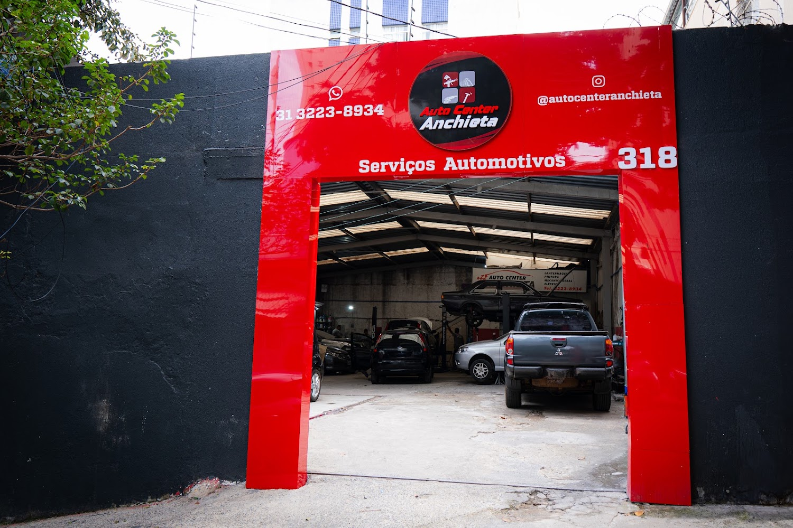

Mecânica geral
Manutenção e reparação de veículos.
Entre em contato com a Auto Center Anchieta para explicar o que seu carro precisa e confirmar o atendimento.
Informações públicas — confirme o serviço por telefone.
Seg. 07:40–18:00 · Ter. a sex. 08:00–18:00
Ver contato →Os serviços abaixo são exemplos comuns da categoria. Confirme diretamente com a oficina a disponibilidade para o seu veículo.
Manutenção e reparação de veículos.
Avaliação cuidadosa antes do serviço.
Cuidados para evitar problemas futuros.
Consulte a oficina sobre o serviço necessário.

Foto pública do estabelecimentoA Auto Center Anchieta aparece em cadastros públicos como centro automotivo. Para evitar informações incorretas, detalhes específicos de serviços e valores devem ser confirmados diretamente com a equipe.
Ligue e explique o que está acontecendo com o veículo.
Consulte disponibilidade, prazo e orientações da equipe.
Use a rota do Maps para chegar ao endereço informado.
Use os botões abaixo para ligar ou abrir a rota até a Auto Center Anchieta.